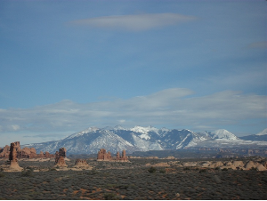
Most of my Utah adventures, aside from snowboarding, take place in the small desert town of Moab. My last trip there was in 2011 with Kate. We flew to Salt Lake and spent a few days snowboarding. Then we packed up and made the 4 hour drive to Moab, where it was 800F and sunny.
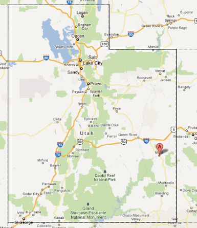
I’d been to Salt Lake several times, but this was my first trip out to the desert. We had a few of the easier intro-to-desert climbs picked out. First up was the South Six Shooter Tower, an hour or so south of Moab. That's the tower on the left next to the North Six Shooter.
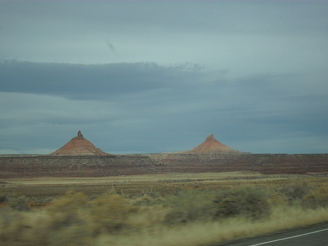
It's hard judge perspective from this picture, but those towers are huge! The actual climbing is the little tower at the top of the big talus cone. A rough guess is an 800 ft of hike up the talus and then a 150 ft climb. The hike turned out to be the hardest part. Getting to the towers is just as fun. They are located a few miles off of four wheel drive-only roads. Here’s the rental car parked at the base of the talus. You’re not supposed to off-road the rental cars, but why would they rent an AWD car if then didn’t want me to try it?
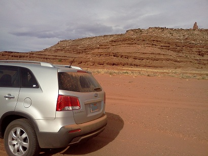
Even from here, the tower is still way off in the distance. And after a lot of hiking, we made it to the base of the climb, only to find a line of 12 or so people ahead of us. I have no idea where they came from, but they somehow got there before us. Here's Kate, looking not too happy to be in the middle of nowhere waiting in line for a climb. That's North Six Shooter in the background.
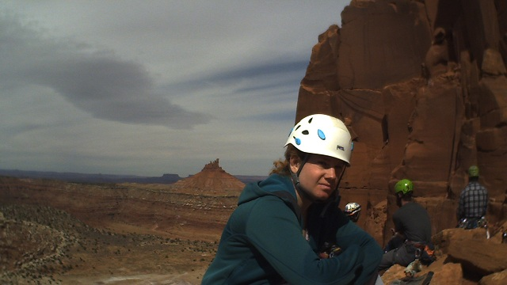
After the South Six Shooter, we decided to do a bit of climbing at Indian Creek. This is a world famous climbing area known for its perfect cracks, some running over 100 ft. Here are a few pictures.
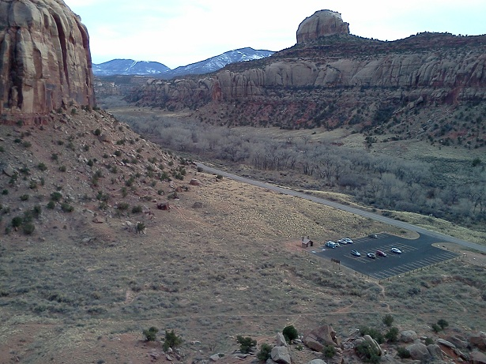
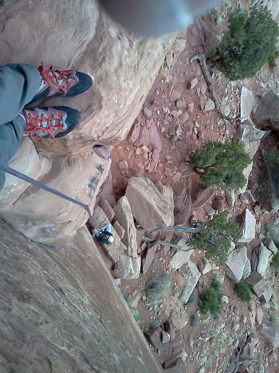
Next on our list were a few towers in Arches National Park. Owl Rock is a small free standing tower about 100ft tall right by one of the parking lots in the par. While we were hanging out at the top of the tower, a couple yelled up from the ground and waved at us. They took a few good pictures of us and we shouted to exchange emails. Thanks to the nice random strangers for these awesome pictures! Here are two pictures of Kate rappelling after we finished the climb.
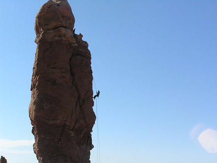
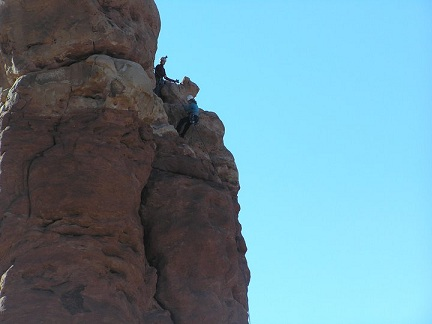
And here is the final tower, Dark Angel, located in Arches National Park. It’s about a two hour hike from the car, and judging from the rock quality, is probably rarely climbed. That's the Dark Angle tower on the far left.
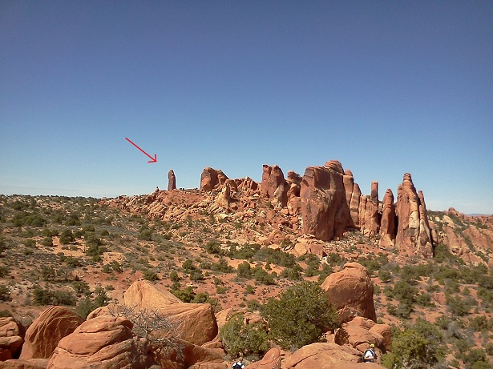
And here we are at the top of the first pitch. We bailed off the top of the first pitch. The rock was really bad, and I even pulled a small chunk off when I climbed. I felt bad since I didn’t want to do anything to ruin such a beautiful tower for future visitors, so we chose not to finish the climb.
That's about it for now. I'll finish up with a few of my favorite pictures from the trip.
Taken in Arches. The La Sal mountains in the background.
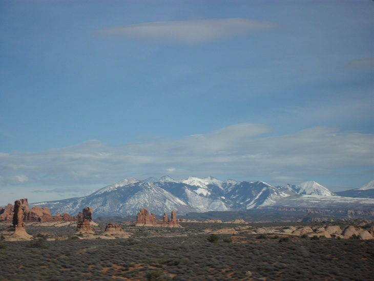
Here's a road leading into Castle Valley. Castleton Tower is on the left and the La Sal mountains on the right.
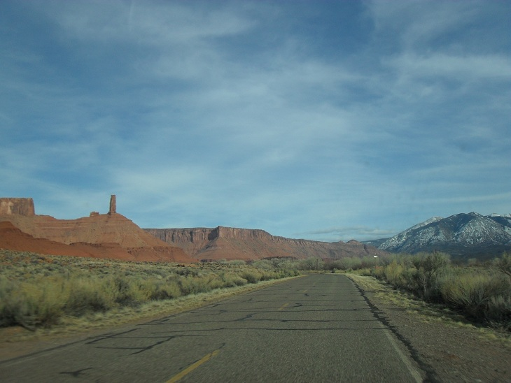
The Fisher Towers (now even more famous from this commercial)
We didn't get a chance to climb that on but it's on the short list.
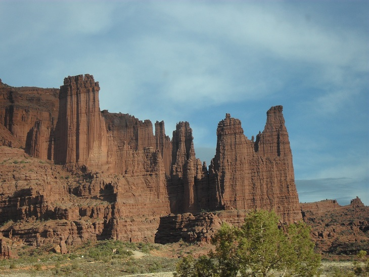
Comments !
comments powered by Disqus